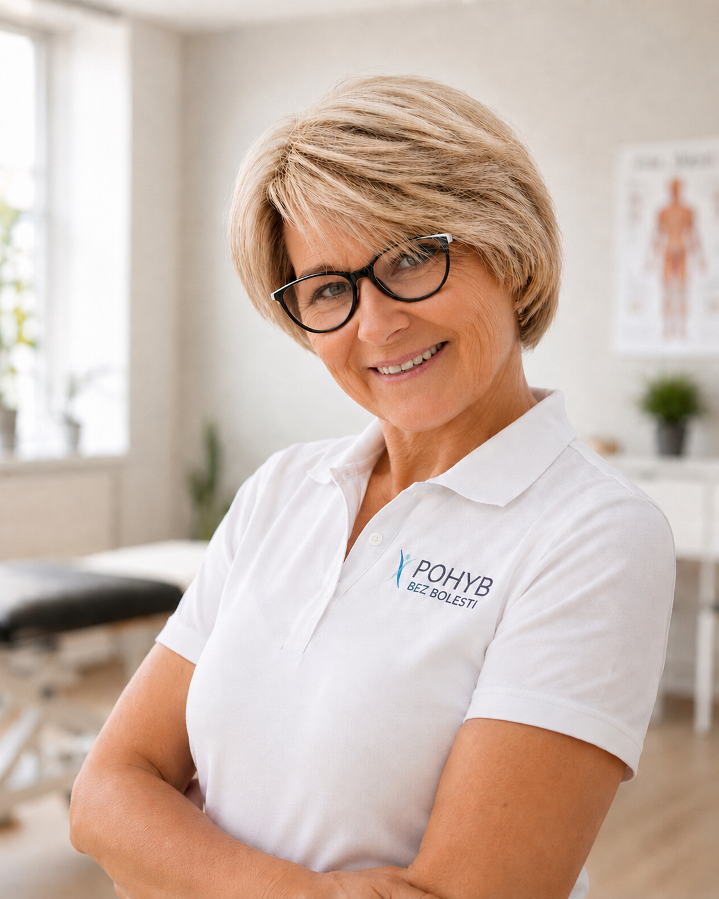

Manuální terapie
Uvolnění blokád, zlepšení pohyblivosti a odstranění bolesti.
Věřím, že téměř s každou bolestí se dá něco dělat. Prvním krokem je najít její skutečnou příčinu a druhým společná cesta. Protože nejlepší výsledky vznikají tehdy, když terapeut a pacient tvoří jeden tým.

Uvolnění blokád, zlepšení pohyblivosti a odstranění bolesti.
Dynamická neuromuskulární stabilizace pro správné fungování těla.
Podpora svalů, zmírnění bolesti a urychlení regenerace.
Bezpečný návrat k pohybu po úrazech a operacích.
Prevence zranění a péče pro rekreační i vrcholové sportovce.
Fyzioterapeutkou jsem se stala, protože chci lidem pomáhat zbavit se bolesti a vrátit se zpět k životu, který mají rádi.
Největší radost mám, když vidím své klienty znovu sportovat, cestovat a dělat věci, které kvůli bolesti museli na čas opustit.
Mým cílem je, abyste od první návštěvy odcházeli nejen s úlevou, ale také s pochopením toho, co se ve vašem těle děje a jak můžete sami přispět ke svému zlepšení.
Fyzioterapie
Úterý – pátek
9:00 – 19:00
Ostatní termíny po domluvě.